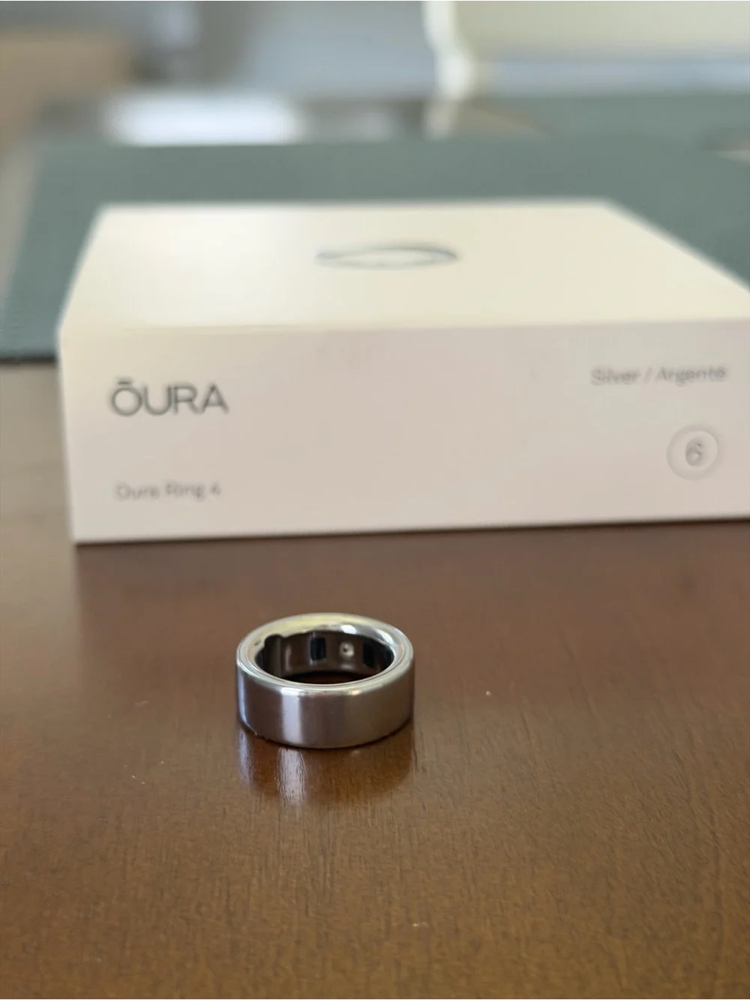

Oura Ring Gen 4, Activity and Sleep Tracker
Check price on AmazonPrices change, check the live price on Amazon before buying.
A screen-free titanium smart ring that tracks sleep, recovery, activity, stress and heart health around the clock. For people who want deep health insight without wearing a watch, turning data into three simple daily scores: Sleep, Readiness and Activity.
Who it is for: People who want sleep, recovery and activity insight in the Oura app without wearing a watch, in a light titanium ring worn around the clock.
Who should skip it: Skip it if you do not want an ongoing membership, a phone app, or a screen-free tracker. Full scores and insights need Oura Membership.
Key features
- Tracks sleep stages, overnight heart rate, HRV, blood oxygen, skin temperature and respiratory rate.
- Readiness Score, Sleep Score and Activity Score in the Oura app.
- Up to 8 days of battery life per charge, water resistant to 100 metres.
- Fully titanium build, only 3.3 to 5.2 grams.
- Oura Membership required for full scores and insights.
FAQs
Do I need a subscription?
Yes, full scores and insights in the Oura app need Oura Membership.
How long does the battery last?
Up to 8 days per charge, and the ring is water resistant to 100 metres.
What does it track?
Sleep stages, overnight heart rate, HRV, blood oxygen, skin temperature, respiratory rate, activity and stress, shown as Sleep, Readiness and Activity scores.